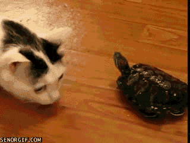

<textarea cols=80 rows=100>
<html>
 <head>
 <script type="text/javascript">
 function okno_zamknij_mal()
 {
 window.close()
 }
 </script>
 </head>
<body>
 <label for="w3review"></label>

<textarea id="w3review" name="w3review" rows="100" cols="100">
Kiedy powstał JavaScript?
 Język JavaScript powstał w 1995 roku.
 Dlaczego jest to język skryptowy?
 JavaScript to język skryptowy, ponieważ jest uruchamiany wyłącznie w przeglądarkach przez co kod nie zostaje skompilowany i pozostaje w formie tekstu.
 Gdzie wykonywany jest JavaScript?
 JavaScript wykonywany jest w:
 -w znaczniku -->body
 -w znaczniku -->head
 -w znaczniku -->html
 -w pliku zewnętrznym<br>
 Dlaczego jest to bezpieczne narzędzie?
 Ze względów bezpieczeństwa JavaScript ma znacznie ograniczone uprawnienia dostępu do zasobów komputera, przy użyciu którego przeglądana jest dana strona, a wszelkie odwołania do funkcji i obiektów wykonywane są w trakcie wykonywania programu.
 Czy jest to język obiektowy?
 JavaScript to obiektowy język skryptowy. Aplikacje napisane w języku obiektowym działają w maszynie wirtualnej lub w przeglądarce, a kod JavaScript jest uruchamiany wyłącznie w przeglądarkach. Dlatego nie jest on językiem obiektowym.
input type="button" name="przycisk" value="Nowa Strona" onclick="WinOpen(' ')"
 To polecenie tworzy przycisk, który po nacisnięciu otwiera nowe okno przeglądarki.
 
window.open("obraz.html","okienko","toolbar=no,directories=no,menubar=no,height=280,width=160,top=200,left=200");
 To polecenie otwiera nowe okno przeglądarki z ukrytym paskiem narzędzi, ukrytymi przyciskami katalogów i ukrytym menu przeglądarki. Otwarte tym poleceniem okno ma wysokość 280 pikseli i szerokość 160 pikseli, jest oddalone od lewej i górnej krawędzi ekranu o 100 pikseli.
 
toolbar=no -ukrywa standardowy pasek narzędzi
directories=no -ukrywa przyciski katalogów
menubar=no, -ukrywa menu przeglądarki
Location=no, -ukrywa pasek adresowy
  Resizable=no, -określa brak możliwości zmiany rozmiaru okna
Scrollbars=no, -ukrywa paski przewijania
Status=no, -ukrywa pasek statusu
height=280, -ustawia wysokość okna
width=160, -ustawia szerokość okna
top=200, -ustawia położenie okna względem góry ekranu<
left=200, -ustawia położenie okna względem lewej strony ekranu
window.open, -;otwarcie nowego okna
window.close, -zamknięcie okna
  
 
   </textarea>
 <input type="button" value="zamknij okno" onclick="okno_zamknij_mal()"/>
</body>
</html>
